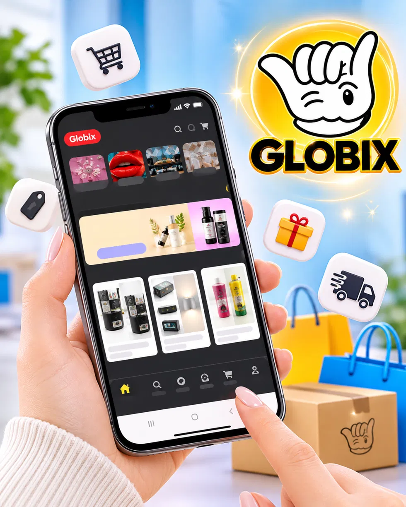
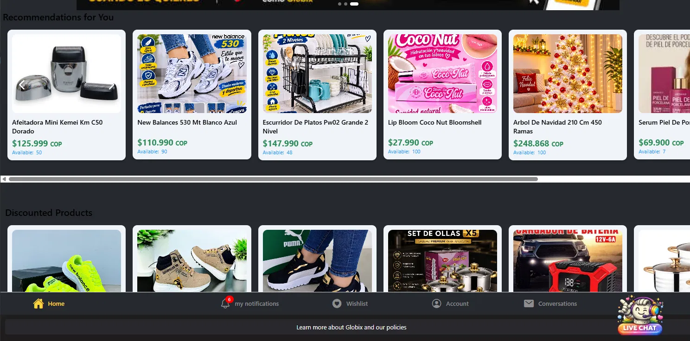

Globix
Marketplace donde las personas publican y encuentran productos y servicios en su país.
- Inicio con feed y categorías por país, ordenadas de la más activa a la menos activa.
- Suscripciones para vendedores con pago en Stripe y confirmación por webhook.
- Medición de eventos con Google Analytics 4 y Google Tag Manager.


- React Native
- Expo
- Redux
- Strapi
- Stripe
- GA4